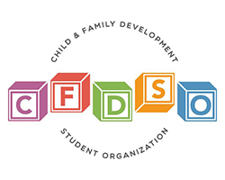

Potential Projects
CFDSO Logo Design
Child Family and Development Student Organization is in need of a new logo for this semester. This potential project would require me to communicate constantly with the student board and research attractive logos that will help bring in newcomers to this organization. This will also help me explore and learn more about graphic design skills.
Projects in Process
Collaborative Web Design Project
For E-Business and Web Development Class, My classmates and I are given the task to create an e-commerce webpage with other students that would help fulfill a relief for many of those affected by COVID-19. Our idea for right now is to create a webpage dedicated to providing provide service to comapnies students in SDSU affected by the current environment. Over the span of the semester, we will be researching and constructing a webpage for our given audience and giving a presentation on our creation.
Past Projects
Process Model Simulation Report

Date:09/27/20 Constructed a small retail store process model and made improvements through analysis of business metrics, key assumptions, and recommendations for future model simulation.
District Attorney Archiving Project
Date:12/15/20 to 06/01/20
Worked alongside other student workers to archive previous and current cases to current archive system.
Project for student workers stopped due to COVID-19 and budget cuts.
Collaborative Consultation Report
Date:02/01/20 to 05/08/20
Collaborated with other students to analyze retail company, Lotus and Luna’s, current inventory management system
and recommended implementing Cin7, a cloud based inventory management system to their company. This project took approximately 13 weeks with constant communication
with Lotus and Luna’s founder and shipping manager.
SDSU BAP(Beta Alpha Psi) Banquet Poster Design

Date:01/30/20 to 03/20/20
Under the banquet committee of SDSU’s Beta Alpha Psi, worked alongside with another committee member to construct a
banquet poster design for the 2020 Spring Awards Banquet. All banquet planning were stopped due to COVID-19.